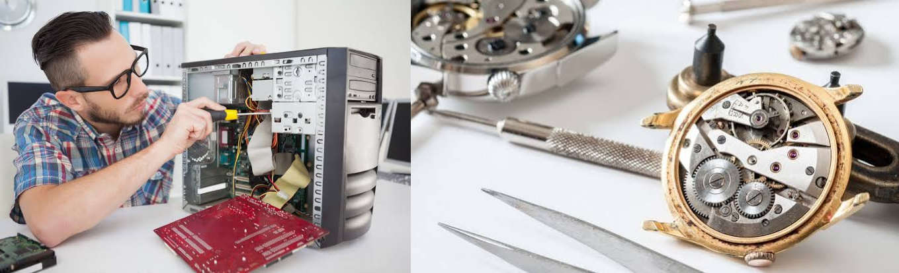

Professional, fast, and guaranteed electronics repair for smartphones, laptops, consoles, and tech devices. We use genuine parts and offer a 90-day warranty on almost all repairs.

All Gadgets Fixed
Mobile phones have become an essential part of our lives. When our mobile stops working, it's quite disturbing. Our repair center gives you reliable mobile repair services so you connect back to the digital world. No matter what issue you are facing, our experts fix Apple iPhone, Samsung, Google Pixel, Huawei, Motorola, Xiaomi, OnePlus, and Oppo.

A malfunctioning laptop will upset your workflow and productivity. Our expert technicians are prepared to provide reliable repair solutions, from hardware fixes to software optimization. We help ensure that your device will function smoothly, no matter the brand: Dell, HP, Lenovo, Acer, Asus, or custom gaming notebooks.

Our skilled technicians specialize in Apple Mac repairs. We handle component-level fixes on MacBook Air, MacBook Pro (M1, M2, M3, Intel), and iMac computers. Save hundreds of pounds compared to replacement.

Gaming consoles bring relaxation and fun, but technical issues ruin the experience. Our experts resolve problems like overheating, disc drive errors, and HDMI port failures for PlayStation, Xbox, Nintendo Switch, and retro consoles.

It is easy to style hair when GHD devices function correctly. Our repair service gets your GHD straighteners working again, always prepared to style with full confidence. We diagnose beeping sounds, intermittent power, or failure to heat up.

Tablet for work or entertainment—any fault in it hampers you. Now, regardless of whether the tablet is from Apple or Samsung or from some other brand, our skilled hand will give your tablet life with efficient repair service so it works flawlessly again.

From desktop workstations and custom gaming towers to Apple Watch and Samsung Galaxy Watch repairs. We replace cracked watch glass, diagnose blue-screen PC crashes, and provide reliable data backups.
